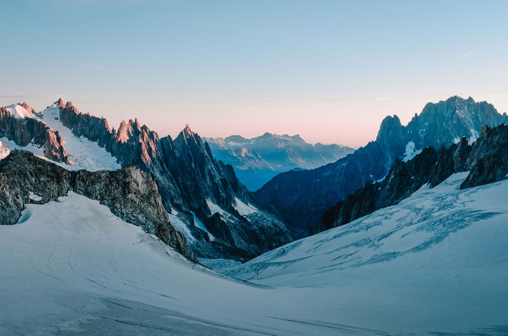

One of Tyshawn Jones’s favorite places to skate is the William F. Passannante Ballfield in Greenwich Village. Even by skateboarding’s flexible standards, this park is barren: a flat expanse of asphalt with paint denoting a baseball diamond. There are no ledges sweaty with wax, no stairs to jump down, not even a measly curb; once you leave the painted infield, the ground becomes too chunky to really skate on. And yet it’s still a destination in New York, known to locals as ‘‘T.F. West’’ — short for ‘‘training facility,’’ a convoluted inside joke about the fact that there’s nothing to skate there.
Except for the trash cans. You’ve probably used trash cans like these: green, metal, the ideal height for dropping garbage into (about midthigh). And provided they don’t have too much in them, they make for handy ad hoc obstacles. Most skaters turn them on their sides, so they come up to just below the knee. Tyshawn Jones generally leaves them upright. Last year, he filmed a short clip at T.F. West, doing nothing but tricks over cans. He tends to clear them so effortlessly that you get the sense they're less an obstacle than a visual reference point, like the little man included for scale in a drawing of a skyscraper or a whale: Look at how high I can do this. The green colorway of Jones's Adidas pro-model shoe comes with a miniature plastic replica of a New York City garbage can; the company made some full-size ones for skate shops too, with “TYSHAWN” in bold letters across the top.
It has been a long time since skateboarding has seen a figure like Jones, someone who rapidly and almost out of nowhere redefines what’s physically possible on a board. His skateboarding is, as one of his sponsors, Jason Dill, put it to me, the type that anyone in the general public can appreciate: ‘‘It’s easily translatable. The physics of what he’s doing is apparent.’’ Jones possesses an unholy combination of vertical leap, flexibility, strength, finesse and timing — which skaters call, somewhat reductively, ‘‘pop’’ — that allows him to launch himself and his board over or onto seemingly whatever he wants, sometimes appearing to float for just a beat too long at the apex, as if briefly entering low orbit. Jones first learned about skating from video games, and it sometimes appears his sense of what can be done on a board is influenced by the unnatural laws of those pretend worlds.
On a Monday afternoon in December, Jones had been lured to T.F. West by his clothing sponsor, Supreme, under the impression he was there simply for an interview with me. He was in fact there to be told by Jake Phelps, the editor of Thrasher, that he’d won the magazine’s Skater of the Year award — street skateboarding’s highest, and perhaps only, honor. The ceremony wasn’t much: Phelps rolled into the park with a cameraman, wearing his signature Carhartt vest, and Jones quickly figured out what was going on.
 Back to Course Home Page